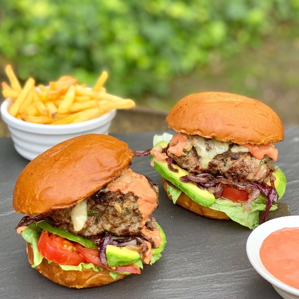

Burgers

Description
Burgers are a staple in many households. I don't exactly know the history, but there are very few people on the planet that haven't tasted some version of a burger. It is as simple as food gets --- grilled meat between two pieces of bread. And if it isn't one of the best things to ever be invented. You would be remiss to not include burgers in your weekly meals.
Ingredients
- Burger Patties
- Burger Buns
- Tomato
- Onion
- Lettuce
- Fries
- Green Beans
Steps
- Start the burgers on the grill.
- Cook the green beans in the microwave. Season with salt and butter.
- Preheat the oven and cook the French Fries. I typically use a bag of pre-made french fries, but if you want to make your own out of fresh potatoes, feel free.
- Chop up the tomato and onion into slices. Dress the burger on the buns. Add your sides and Enjoy!